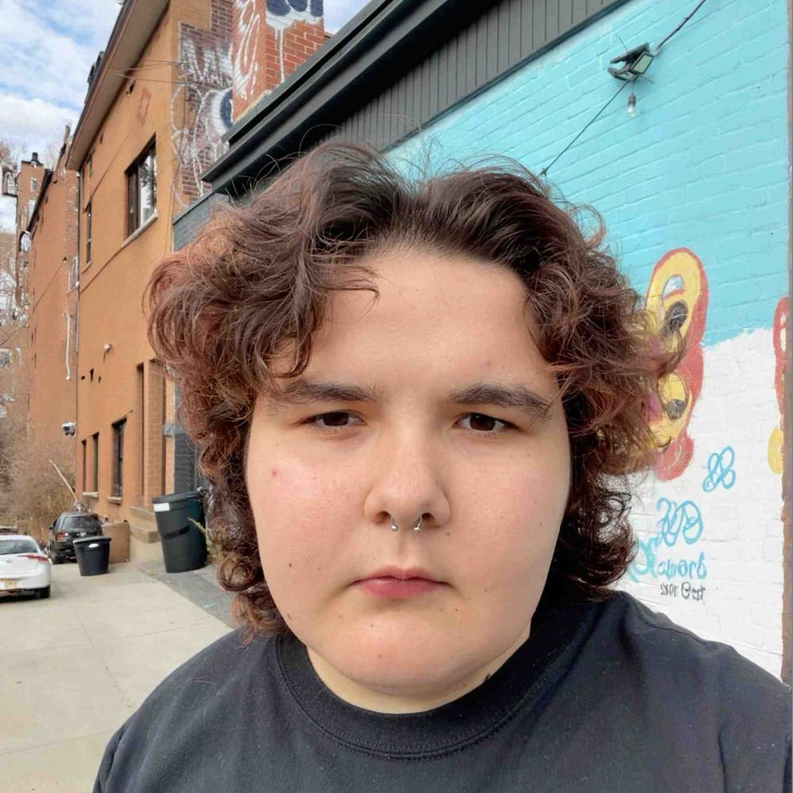
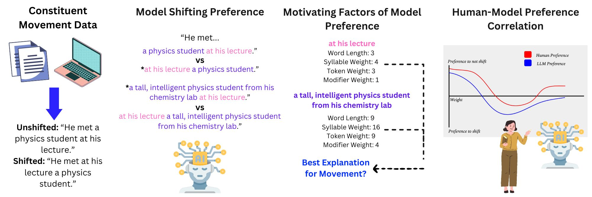
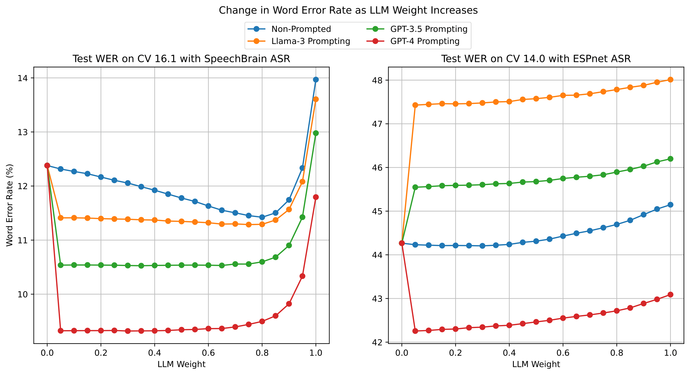
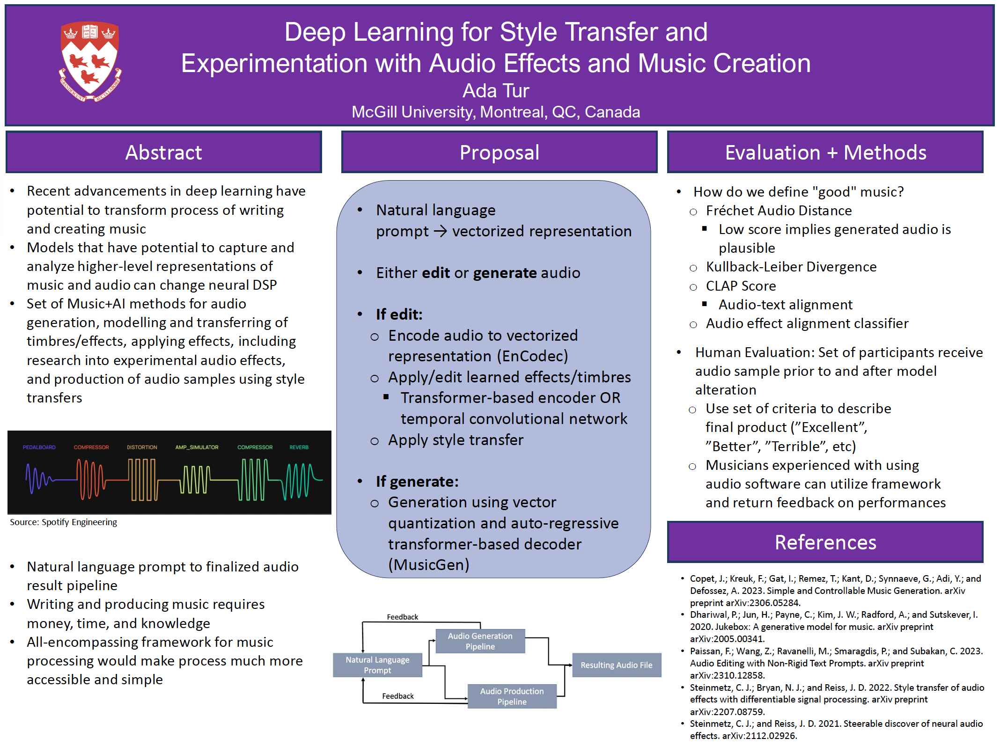
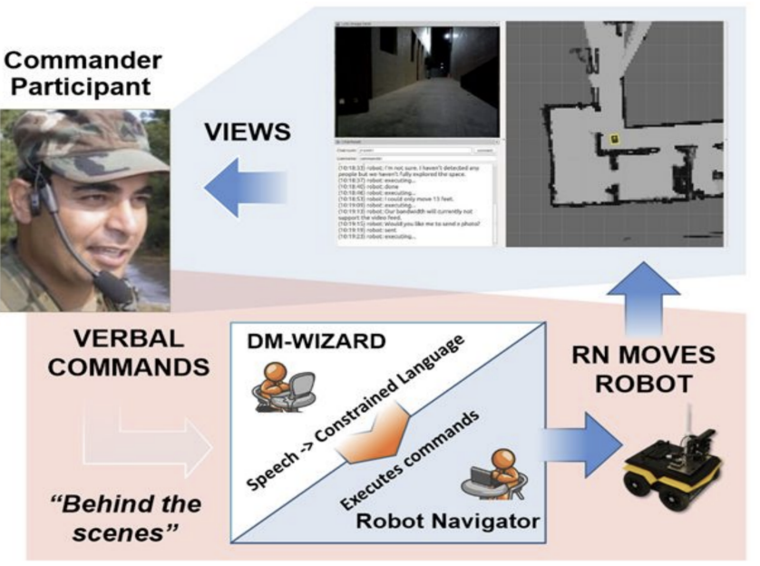
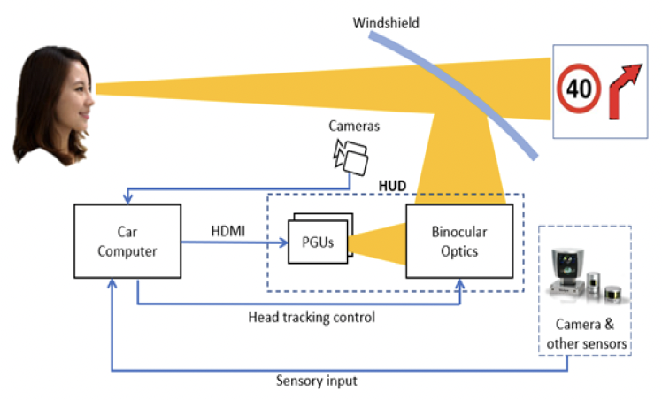

|
Ada Tur I'm a third year Computer Science and Linguistics student at McGill University in Montreal, QC, and a member of McGillNLP and Mila under Professor Siva Reddy. I'm also a co-president of the McGill AI Society and a 2024 AAAI UC Scholar! You can also occasionally catch me live on CKUT 90.3FM :-)! My research is concerned with understanding and explaining how models process language and meaning, as well as investigating and improving the safety of such models. Previously, I was a research intern at MILA under Professor Mirco Ravanelli, where I worked on the SpeechBrain project implementing neural rescoring for ASR systems. Prior to that, I worked under Professor David Traum in the USC Institute for Creative Technologies researching human-computer interaction, as well as conducting research at CyVision on computer vision for driving assistance systems. |
 |
{kind=link}
Research |
|

|
Shift Happens: Post-Verbal Constituent Shifting in LLMs (alternate title during review period)
Ada D. Tur, Gaurav Kamath, Siva Reddy, Under review at NAACL, 2025 code TBR / preprint TBR / data TBR Investigating post-verbal constituent shifting in large language models. More details TBR |

|
ProGRes: Prompted Generative Rescoring on ASR n-Best
Ada D. Tur, Adel Moumen, Mirco Ravanelli, Accepted to IEEE Spoken Language Technology Workshop, 2024 ! code / preprint Enhancing the performance of automatic speech recognition with large instruction-tuned language models. |

|
Deep Learning for Style Transfer and Experimentation with Audio Effects and Music Creation
Ada D. Tur AAAI Undergraduate Consortium, 2024 paper / poster A proposal for a set of Music+AI methods that serves to assist with the writing of and melodies, modelling and transferring of timbres, applying a wide variety of audio effects, including research into experimental audio effects, and production of audio samples using style transfers |

|
President Botrick: An Analysis of Deep Learning-Based Conversational AI Models to Identify and Create Influential Political Speeches
Ada D. Tur, Julia Hirschberg AAAI Workshop for AI and Diplomacy, 2023 github / paper Exploring the defining qualities of natural language that are considered influential and charismatic in the context of political speech using LLMs. |

|
Comparing Approaches to Language Understanding for Human-Robot Dialogue: An Error Taxonomy and Analysis
Ada D. Tur, David R. Traum Language Resources and Evaluation Conference, 2022 github / paper A comparison between relevance-based classification and generative transformers for natural language understanding in a human-robot interaction domain. |

|
ML‐Based Eye Tracking for Augmented Reality Heads‐Up Displays (AR HUDs)
Ada D. Tur, Deniz Yaralioglu, Cemalettin Yilmaz SID International Symposium, 2021 paper 3D Augmented Reality (AR) Heads‐up Displays (HUDs) have the potential of overlaying virtual objects at the correct locations with accurate motion parallax. Accurate overlays require tracking the pupils of the driver's eyes. We developed an ML‐based pupil tracking system based on a convolutional neural network (CNN) to find the precise location of the pupils. |
|
Ada Tur, 2025 | Credits to Jon Barron |